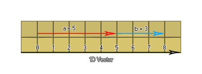

En algún momento, al crear un juego de cualquier complejidad, probablemente tendrás que lidiar con vectores. Se usan en física, en IA, en trigonometría y en muchas otras situaciones, pero ¿qué es un vector? Bueno, para decirlo simplemente, un vector es una cantidad dirigida. Comencemos mirando un vector de 1 dimensión, que es lo mismo que un solo número, dibujando una línea numerada con una flecha que comienza en cero y termina en 5. Este es el vector a que es igual a 5 y si dibujamos otra flecha que comienza en el 5 y termina en el 8 tenemos el vector b que es igual a 3. 
Debes darte cuenta de que no importa dónde comience un vector, todo lo que importa es cuánto tiempo y en qué dirección va. Entonces, el vector b comienza en 5, tiene 3 unidades de longitud y apunta a la "derecha", por lo que idéntico a un vector que comienza en 0 y va a 3. Ahora, también puede agregar estos vectores, poniendo los dos vectores a y b de extremo a extremo para obtener el vector c, que es igual a 8. ¿Qué ocurre con los números negativos? Bueno, si, en la imagen de arriba, un vector que apunta a la "derecha" corresponde a un número positivo, puedes ver que un vector que apunta a la "izquierda" correspondería a un número negativo, haciendo que un vector unidimensional no sea nada más que un número firmado (+/-). Esto explica el concepto esencial de un vector: solo la longitud y la dirección ("izquierda" o "derecha" en este caso) cuentan, no la posición.
Entonces, ¿qué hay de 2 vectores dimensionales? Bueno, podemos pensar que consisten no solo en "izquierda" y "derecha", sino también "arriba" y "abajo": 
Ahora, esos no son en realidad vectores todavía, ya que todavía tenemos que reducirlos utilizando sus coordenadas de inicio y fin. Mirando el vector a podemos ver que tiene una coordenada de inicio de [2,2] y una coordenada final de [4,3] y para obtener el vector de esto necesitamos reducirlo restando las coordenadas finales desde el comienzo coordenadas como esta: [(x2-x1), (y2-y1)] = [(4-2), (3-2)] = [2,1]. Hagamos lo mismo para el vector b ahora: [(-1.2 - (- 3.2)), (2.1 - 1.1)] = [2, 1]. ¿Notar algo? ¡Esos dos vectores son lo mismo! Esta es una demostración más de que un vector no tiene posición, solo dirección y longitud, y podemos dibujar esos vectores uno con respecto a otro alrededor de un eje local [0,0]: 
Esto significa que un vector 2D se define por dos valores, una x y una posición y en relación con el eje local [0,0]. ¿Y qué hay de los vectores 3D? Bueno, tienen la dimensión adicional de "profundidad" para lidiar y se calcularían como las posiciones x, y y z alrededor de un eje local algo como esto: